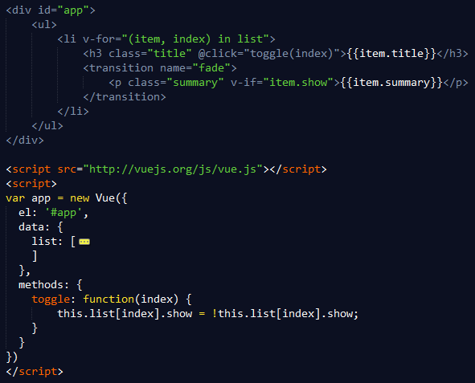
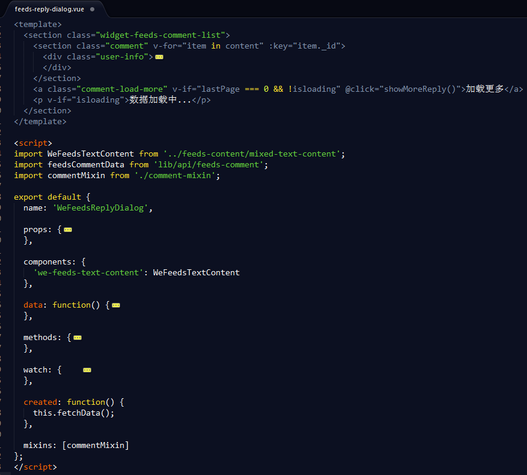
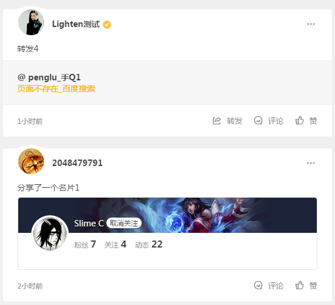
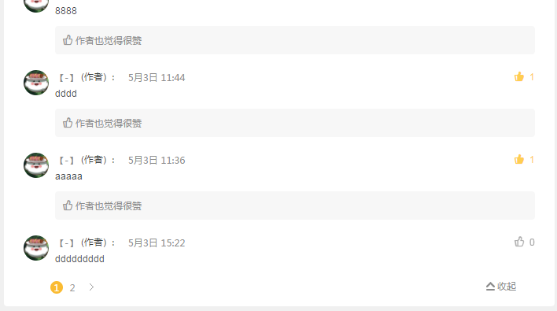
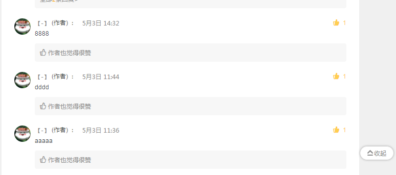
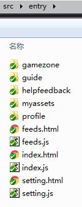
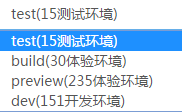

渐进
从jQuery到Vue
凡事往往，皆为序章
jacobtan/2017-6
- 关于jQuery
- 关于Vue
- 渐进，凡事往往，皆为序章
$(".title").click(function() {
$(this).next('.summary').fadeToggle();
});
关于jQuery
- DOM操作
- ajax
- 兼容性
- 结构、表现、行为分离

.vue
关于Vue
- 响应式，一切围绕数据
- 组件，DRY(Dont Repeat Yourself)
数据
- 状态管理：数据的变化 -> 界面变化
- 无需操作DOM，只要更新数据
- 为什么数据中的对象更新有时候不会响应到界面？
- demo 1
var app2 = new Vue({
el: '#app',
data: {
showMore: true,
toggleText: '收起更多',
detailText: '这里有更多内容这里有更多内容这里有更多内容。'
},
methods: {
toggleMore: function() {
this.showMore = !this.showMore;
}
}
})
组件
- 属性：自上往下的数据流动
- 事件：自下往上的数据流动
- slot：模版结构自定义
- demo 2
<h3>list1</h3>
<todo-list :list="listData"></todo-list>
<h3>list2</h3>
<todo-list :list="listData" list-id="list2" @comp-click="listItemClick">
<template slot="listItem" scope="props">{{props.item.title}} ({{props.item.time}}小时)</template>
</todo-list>
html标签组合成页面

组件组合成页面

渐进，不变的是变化
- 一开始，我是拒绝的
- 一定要本地构建吗？
- 简单的模板引擎
- 继续对DOM节点的操作(选择器)？
- 组件，一个简单的js对象
- mixin，组件选项复用
- Render函数，AIO(All In One)
- 函数化组件 & 动态组件
- 自定义指令(directive)，在你需要操作DOM的时候
- Vue大生态(单文件组件、vue-cli)
一开始，我是拒绝的
- 拒绝源于恐惧、未知
- 学习：虽然大部分人知道读书有用，但是坚持读书的人还是很少。
- pull vs push
一定要本地构建吗？
- Vue: 渐进式 JavaScript 框架
- 模板引擎 + 事件处理
- 组件
- 单文件组件
- 单页/多页应用
模板引擎 + 事件处理
- jQuery在哪里？
<div id="app">
<a href="###" @click="toggleMore">{{toggleText}}</a>
<div v-if="showMore">
<p>{{detailText}}</p>
</div>
</div>
var app = new Vue({
el: '#app',
data: {
showMore: true,
toggleText: '收起更多',
detailText: '这里有更多内容这里有更多内容这里有更多内容。'
},
methods: {
toggleMore: function() {
this.showMore = !this.showMore;
}
}
})
继续对DOM节点的操作(选择器)？
- 尽量避免DOM操作（按需使用自定义指令）
- 状态管理，数据即界面
- 改变数据，DOM自动变更
组件，一个简单的js对象
var todoList = {
template: '{{item.title}}
',
props: {},
computed: {},
data:function () {},
methods: {}
};
app = new Vue({
el: '#app',
data: {
},
components: {
'todo-list': todoList
}
....
mixin，组件选项复用
comment-mixin.js
export default {
props: {},
method: {deleteItem: function(){...}},
directives: {}
};
...
<a @click="deleteItem"
...
import commentMixin from './comment-mixin';
...
mixins: [commentMixin]
...
Render函数，AIO(All In One)
- template字符串处理太麻烦？
<p v-if="state.buyType === 0" class="fn-btn disabled">
<span>{{state.text}}</span>
</p>
<a v-if="state.buyType === 1" :class="['fn-btn', 'btn-buy', {'disabled': !protocolChecked}]" @click="chooseGame">
<span>{{state.text}}</span>
</a>
<div v-if="state.buyType === 2" class="fn-btn btn-cue">
<span>{{state.disableBuy.title || "敬请期待"}}</span><a href="###" @click="disabledNote(state.disableBuy)">查看详情</a>
</div>
<div v-if="state.buyType === 3" class="fn-btn btn-cue">
<span>{{state.text}}</span><a href="###" @click="noteBuyMaster(state.master)">{{state.master.name || "本体"}}</a>
</div>
Render函数，AIO(All In One)
- compile template to render
- only Vue runtime (.vue)
var todoList = {
props: {},
computed: {},
data:function () {},
methods: {}
// template: '...',
render: function(h) {
return h(
data.mark || "div",
{
class: data.cls || {"fn-btn": true, "btn-cue": true},
on: data.evt || {}
},
data.childrens || [h("span", this.state.text)]
);
}
};
同一个容器根据条件显示不同组件
函数化组件 & 动态组件
// 函数化组件
functional: true,
render: function (createElement, context) {
function appropriateListComponent () {
var items = context.props.items
if (items.type === 'ad') return itemAd
if (items.type === 'card') return itemCard
return itemText
}
return createElement(
appropriateListComponent()
...
// 动态组件
<component v-bind:is="currentView">
data: {
currentView: 'home'
},
components: {
home: { /* ... */ },
posts: { /* ... */ }
...
收起按钮
页面位置、状态变化之后
自定义指令(directive)
- 自定义指令 directive
- 在你需要操作DOM的时候
<a v-icenter="401" ...
<div v-fixedwhensplit ...
<div v-clickoutsidetarget ...
directives: {
// 跳转到个人中心
icenter: function(el, binding) {
if(!binding.value) {
return;
}
el.addEventListener('click', function() {
redirect('/platform/profile/icenter.html?tgp_id=' + binding.value);
});
}
Vue大生态
- vue-cli：webpack + gulp
- vue单文件组件
- 多文件构建：webpack
- 文件、环境：gulp
- 